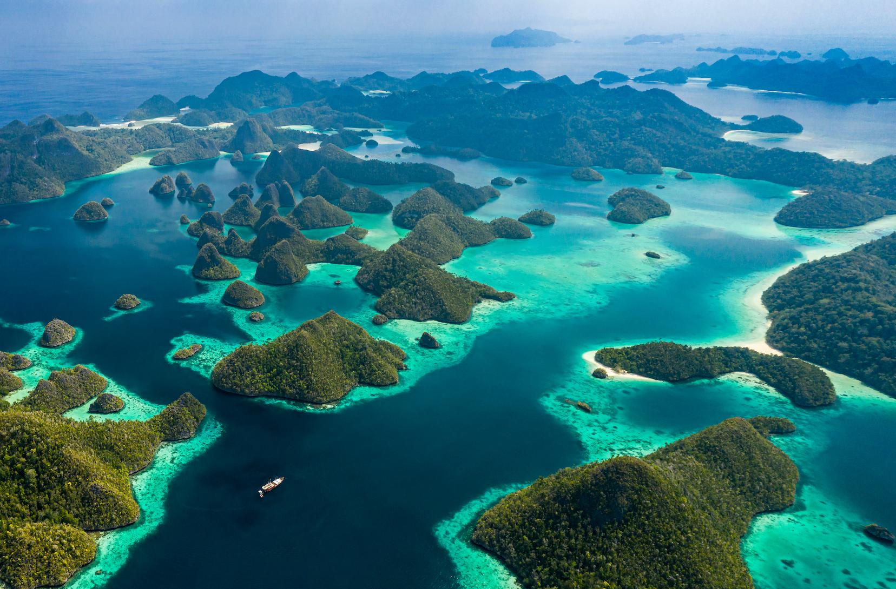
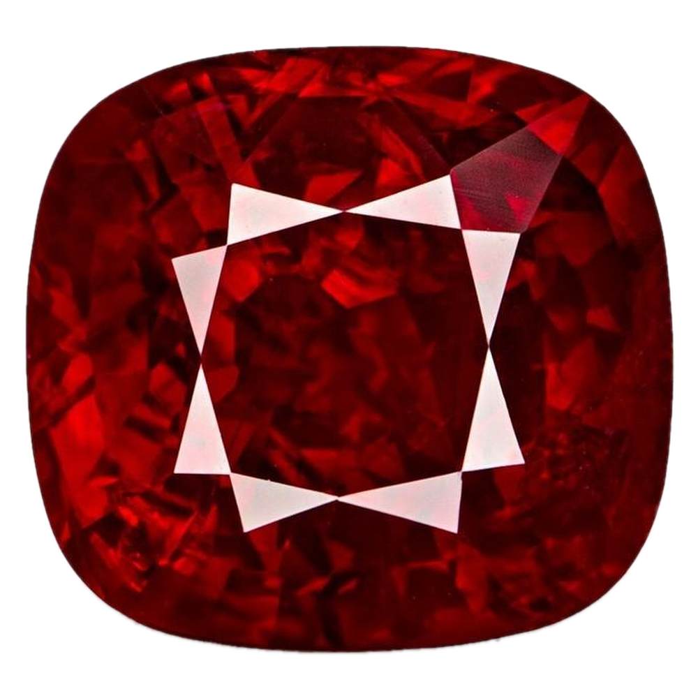
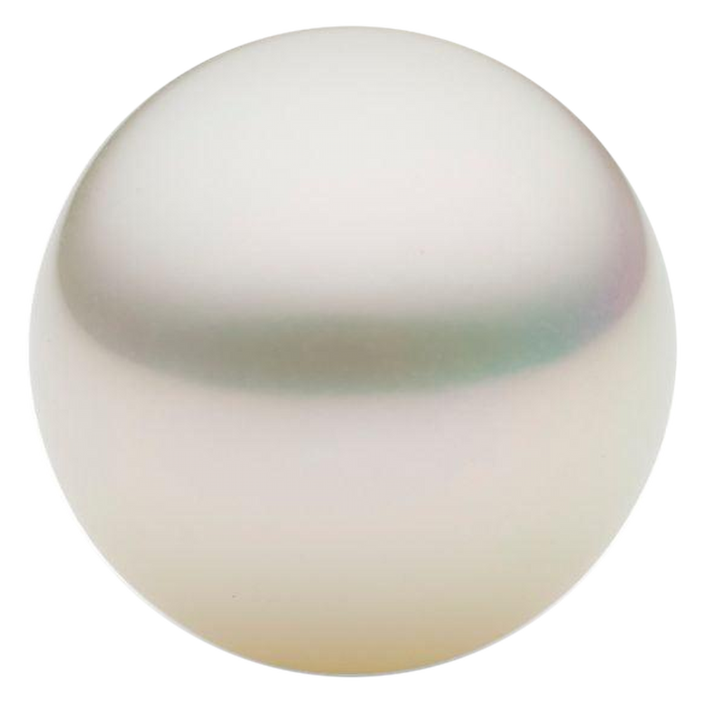
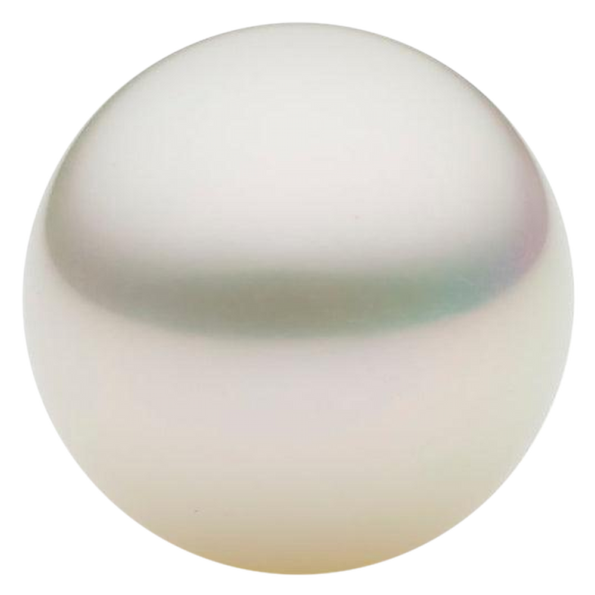
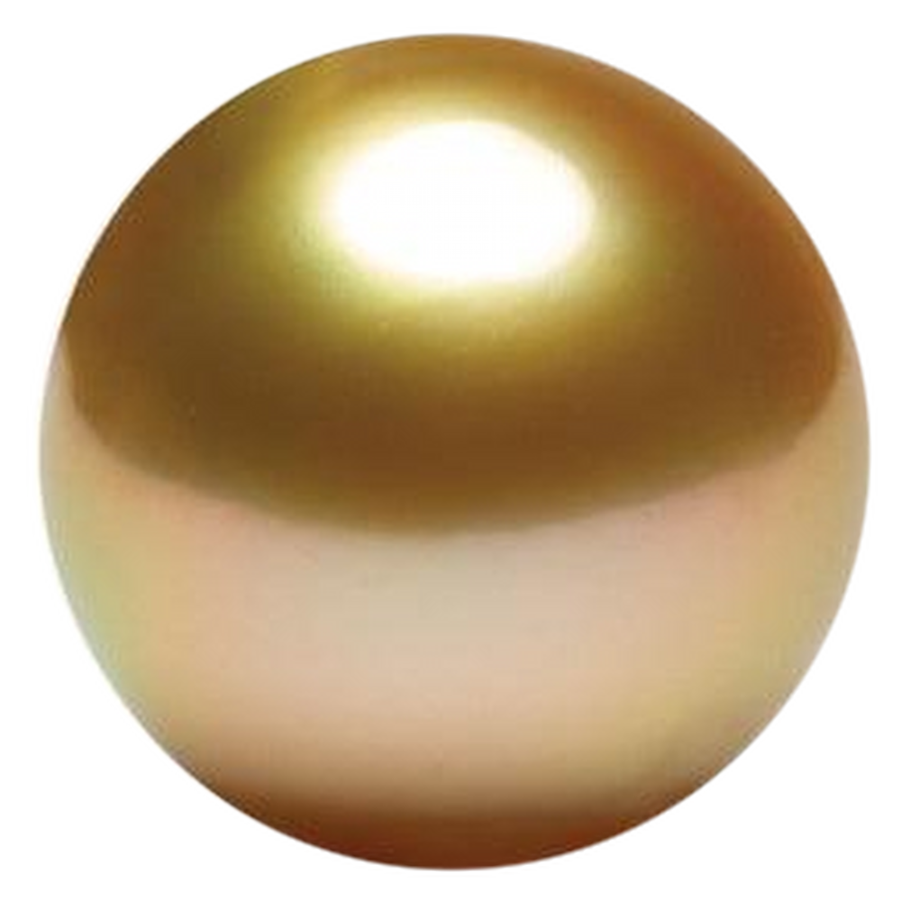

Southeast
AsiaPart II
AsiaPart II
Myanmar
Malaysia
Indonesia
Philippines
From rubies to ocean pearls
From Myanmar’s celebrated rubies and spinels to the ocean pearls of Malaysia, Indonesia and the Philippines — Southeast Asia reveals a remarkable diversity of natural treasures.




South Sea Pearl